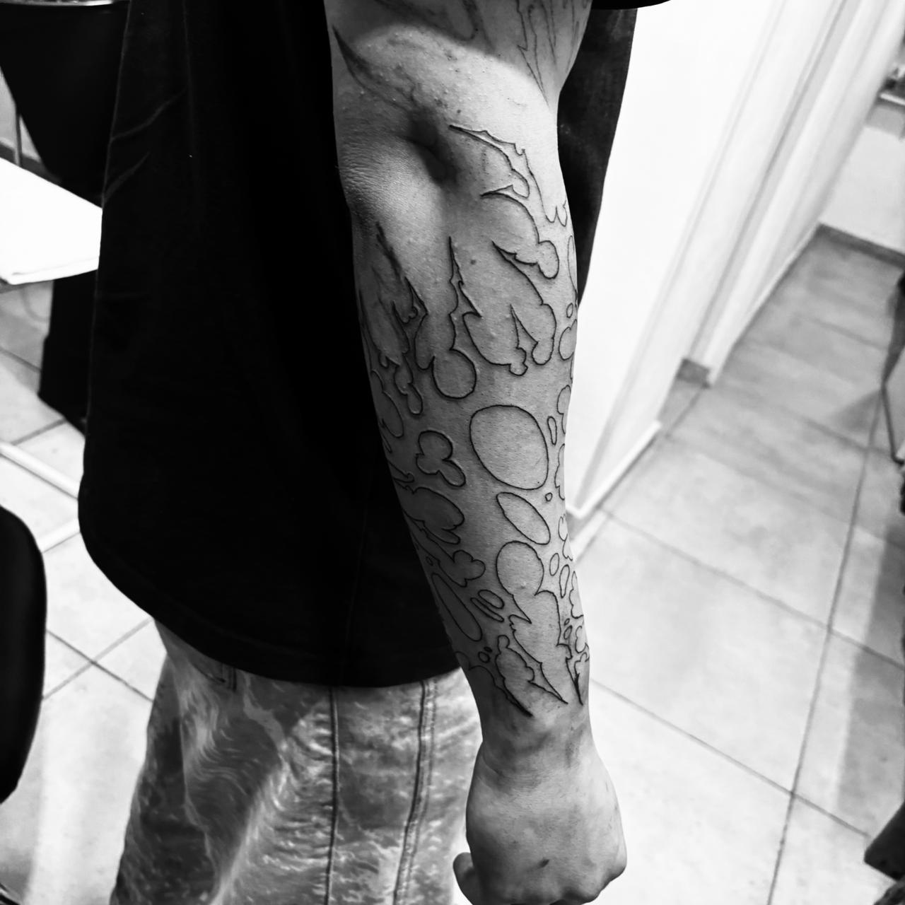
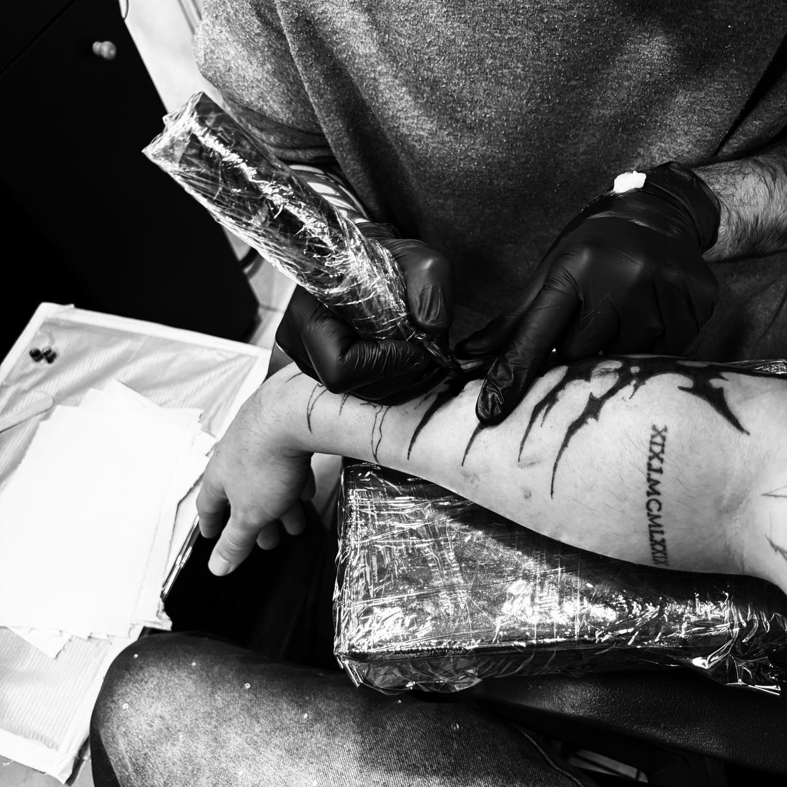
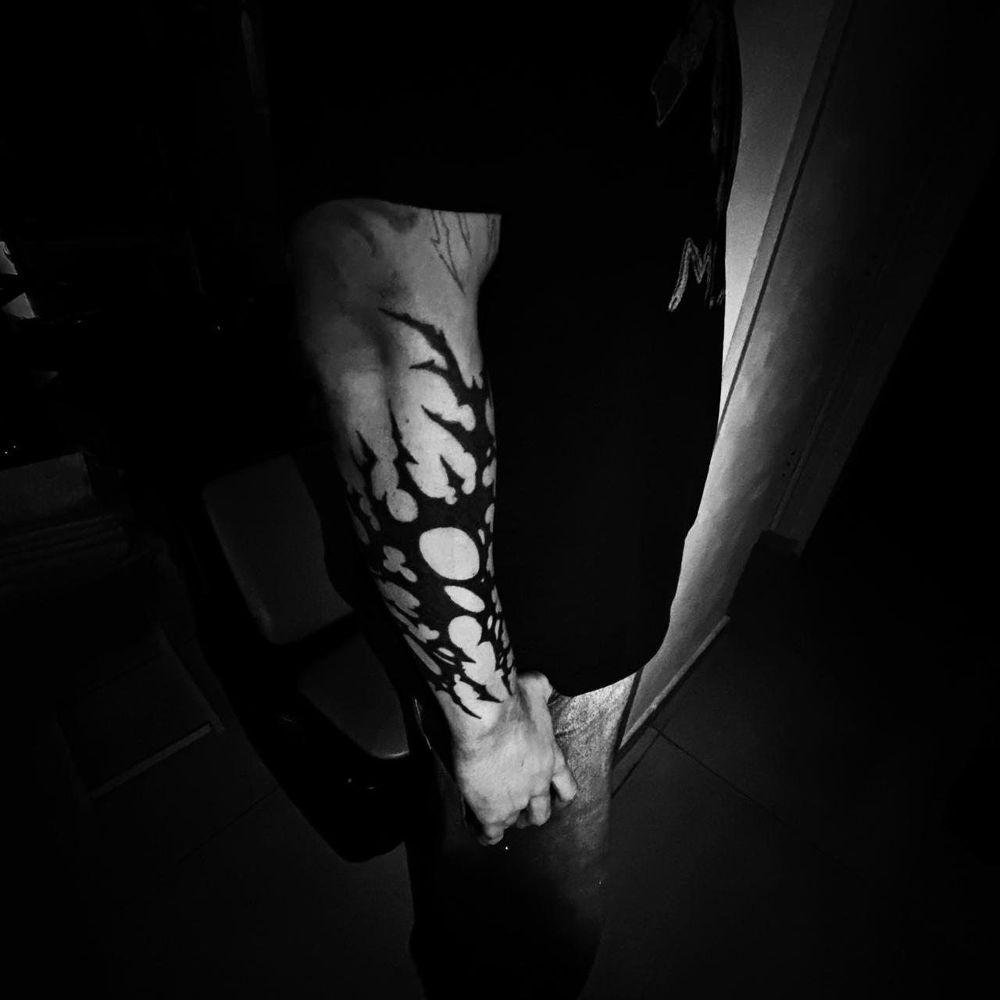
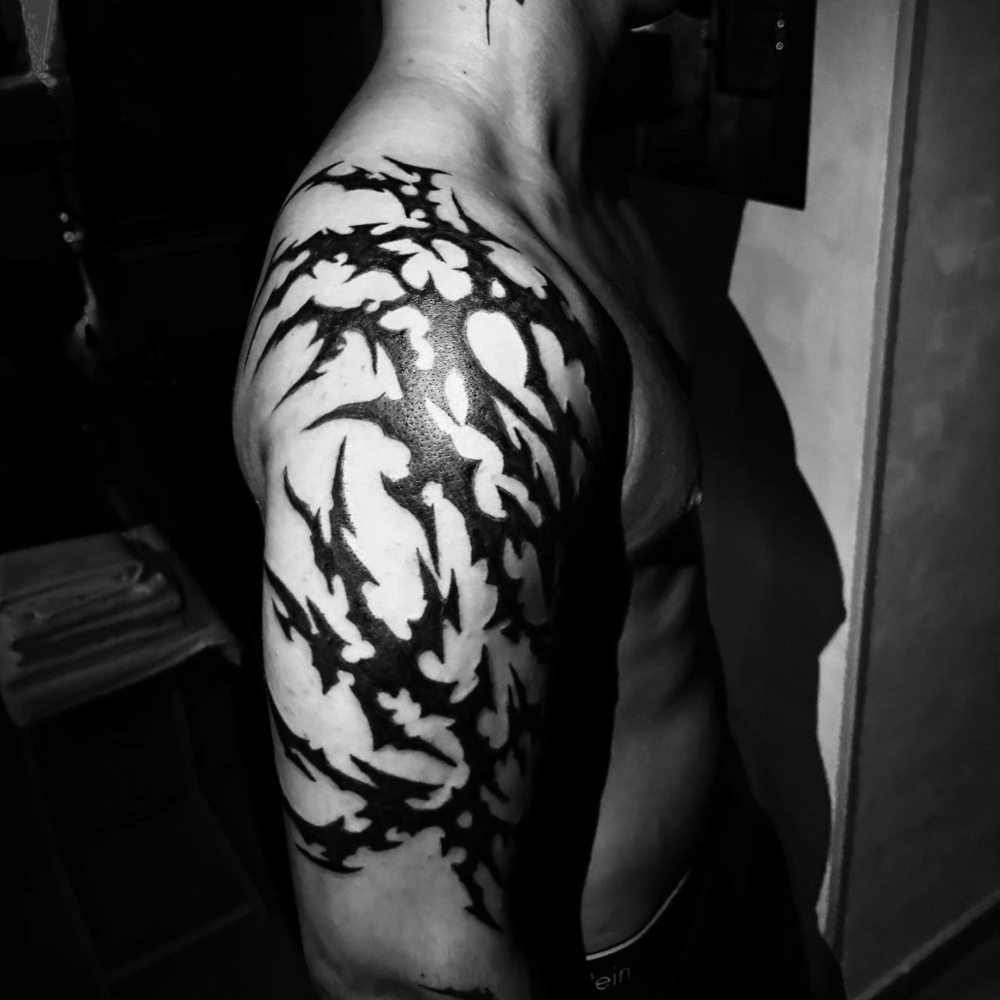
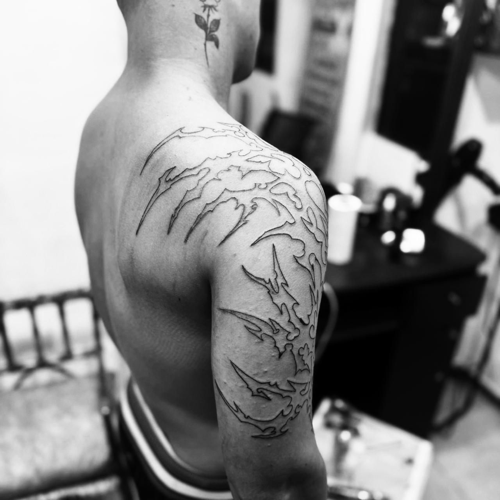
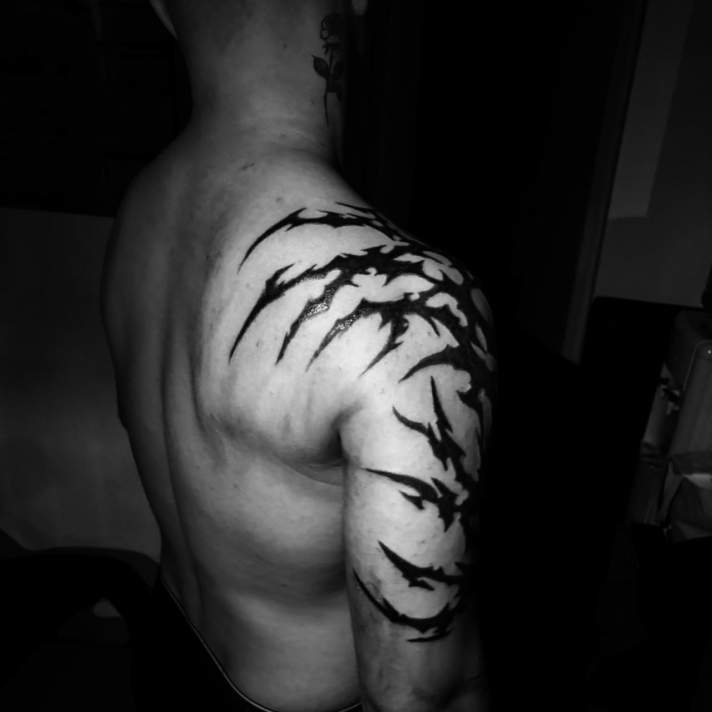
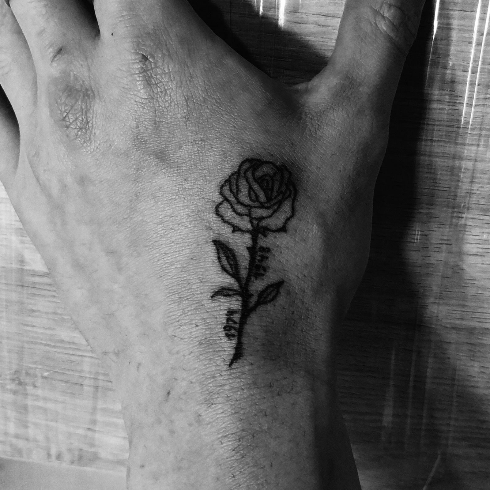
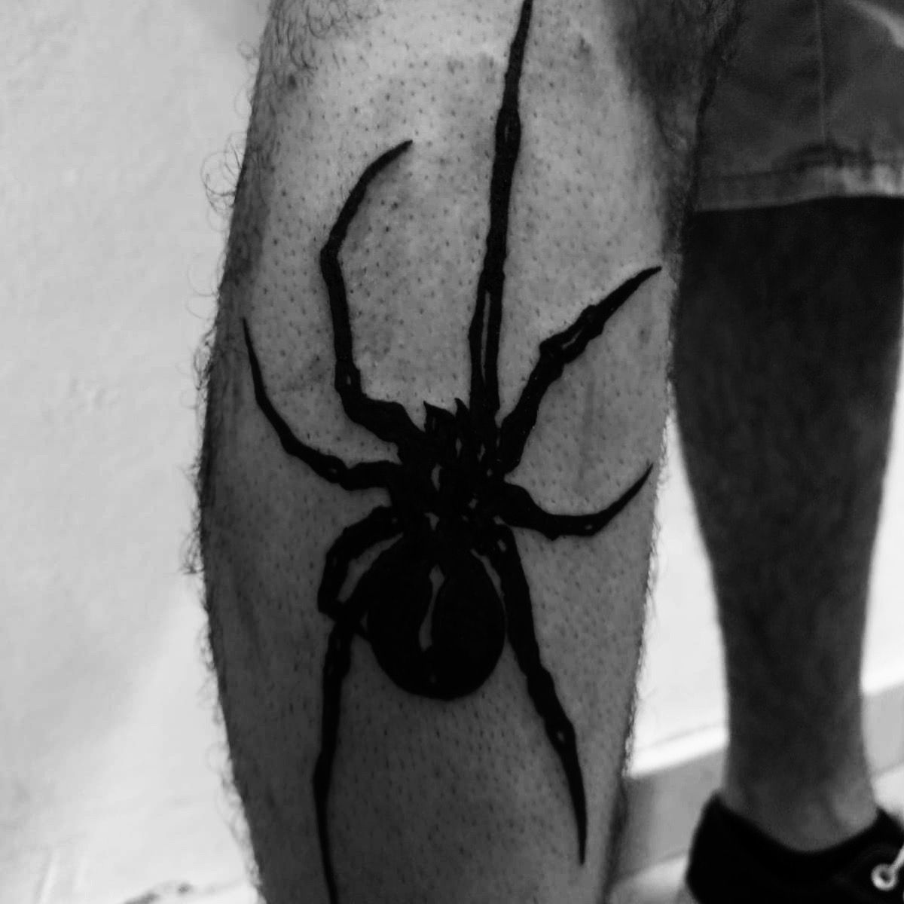
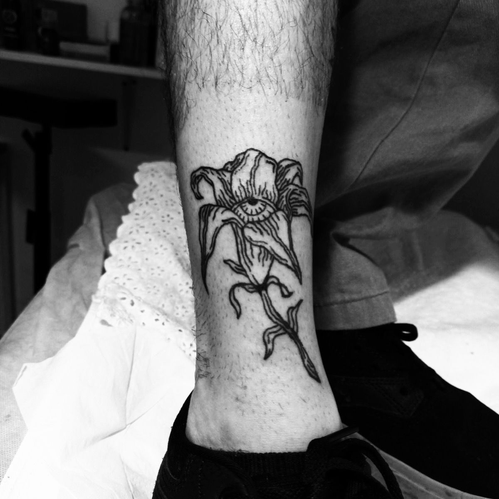

Black Work
Estilo que utiliza exclusivamente tinta negra en grandes áreas sólidas, creando diseños de alto impacto visual con contrastes marcados.









Estilo que utiliza exclusivamente tinta negra en grandes áreas sólidas, creando diseños de alto impacto visual con contrastes marcados.
Estilo futurista inspirado en la estética cyberpunk, con formas abstractas, símbolos y líneas que evocan circuitos y glifos digitales.
Reinterpretación moderna del tatuaje tribal tradicional, con formas orgánicas, puntas afiladas y patrones que envuelven el cuerpo.
Estilo minimalista de líneas ultrafinas y delicadas, ideal para diseños detallados, florales o geométricos con una estética suave y elegante.
Hola, soy el Mene Nene, tatuador profesional con más de 5 años de experiencia en el campo. Mi estilo se basa en la creación de diseños únicos y personalizados, combinando técnicas tradicionales con innovaciones modernas. Mi enfoque principal es el Black Work aunque manejo diversos estilos y me adapto a las necesidades de cada cliente. Soy Diamante 4.
Instagram: @ink_vinito
Teléfono: +54 9 11 6747-8239